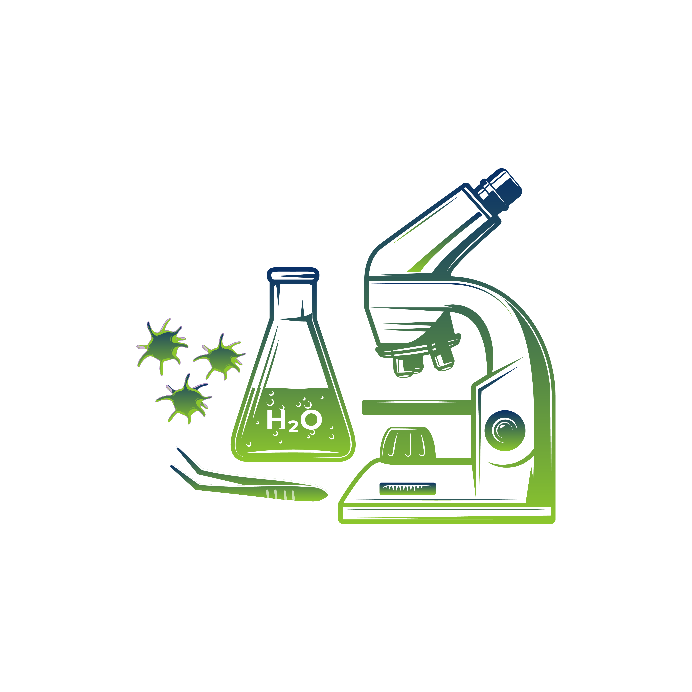

Biology
Examination of the structure of the Kidney (Sheep Kidney / Model)

The objective of this practical is to examine and understand the structure of the kidney using a model. By observing the various components of the kidney model, students will gain a better understanding of its anatomical features and functions.
Materials
- Kidney model (available in biology labs or educational supply stores)
- Dissection tools (scalpel or scissors)
- Disposable gloves
- Hand lens or magnifying glass
Precautions
- Wear disposable gloves to prevent the spread of bacteria or contaminants.
- Follow safety guidelines including rules regarding the use of dissection tools, proper disposal of materials, and handling of chemicals.
- Clean and disinfect After completing the practical.
- Ensure that students are supervised throughout the practical.